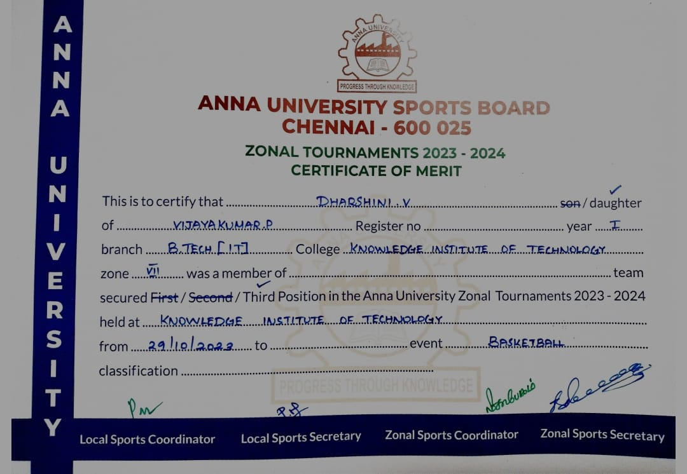

Extra Curricular Activities
Besides web development, I’m very passionate about sports. Participating in games keeps me focused, disciplined, and energetic — qualities I carry into my academic and tech life too.
- Kho-Kho: 1st place winner at College Sports Day – I represented my department and we secured the top spot!
- Basketball: Represented the college in Zonal Level Matches and secured 3rd place. Teamwork, practice, and strategy were the keys!
- Throwball: Regular team player in college events, known for my coordination and energy on the court.
